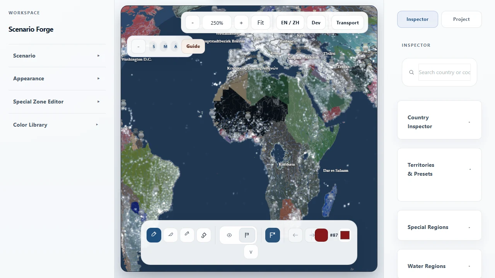
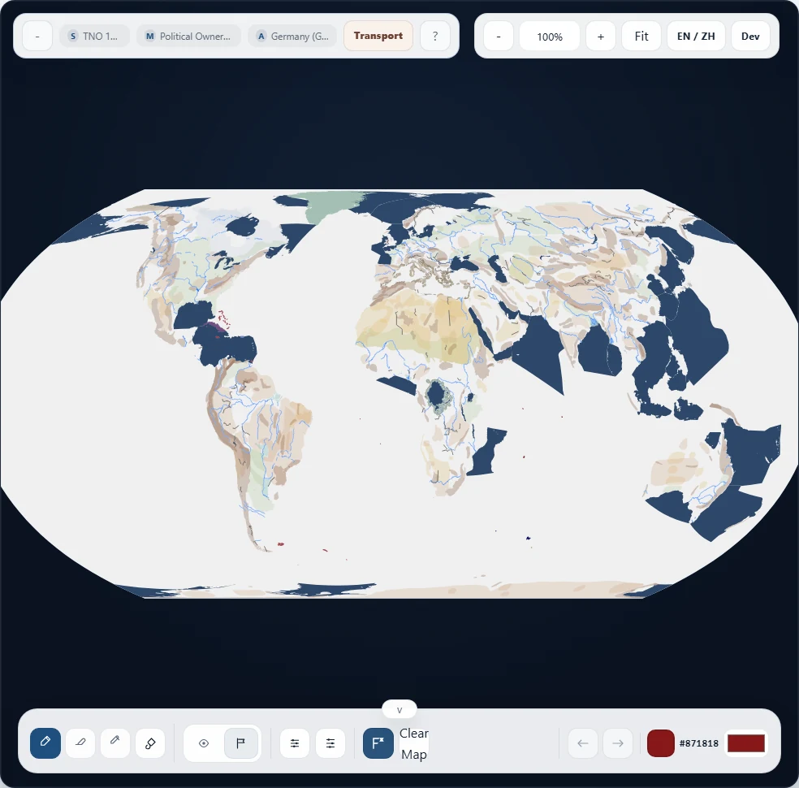

Alternate history baseline
Start from a scenario, not a blank canvas.
Switch between named world states, keep political context intact, and begin from something that already carries narrative meaning.
Scenario-first political map workbench
Build from a world state, reshape ownership and control, layer context, and export a map that can actually carry a story.
Selected works
Scenario Forge is easiest to understand when you see the maps it can produce, not when you read a wall of feature names.
Alternate history baseline
Switch between named world states, keep political context intact, and begin from something that already carries narrative meaning.

Conflict and context
Blend ownership, labels, urban lights, and context layers to move from editor output toward presentation-ready storytelling.

Atlas-style output
Dial back the noise, tune the layer stack, and export a map that reads like a finished visual, not just an internal workspace snapshot.
Why Scenario Forge
Workflow
Use built-in baselines like Blank Map, Modern World, HOI4 1936, HOI4 1939, or TNO 1962 to begin from an explicit scenario frame.
Shift who owns what, who controls what, and how the map should read politically without rebuilding the whole surface from scratch.
Add rivers, urban areas, city points, water regions, special zones, legends, and visual refinements, then export a clean PNG or JPG snapshot.
Feature groups
Named starting points, default scenarios, palette packs, and scenario-aware startup flow.
Ownership, controller, frontline-style views, brushes, selected objects, and scenario-level map changes.
Physical regions, rivers, urban areas, city points, water regions, special zones, legends, and display tuning.
Project save/load, bilingual UI, snapshot export, and a workspace that keeps editorial polish close to the map itself.
Built for
In progress
Scenario Forge already has a strong core. Some transport-related surfaces are still intentionally presented as work in progress.
Partially complete. It exists, but it is not yet the center of the product story.
Currently the most mature transport sample inside the project.
Still closer to baseline or shell stage and should be treated as in-progress, not product-defining yet.
Ready to open the workbench?
The showcase explains the product. The editor is where you actually shape the scenario.